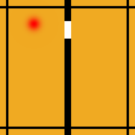
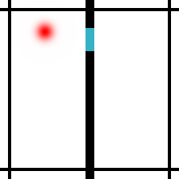
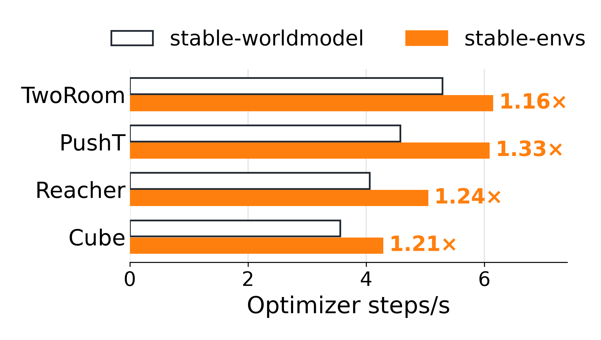

Abstract
Scaling World Models (WMs) requires processing large amounts of image frames data, and conventional training pipelines typically require (1) physically storing large amounts of image data on disk, (2) reading data from disk into memory, and (3) move from memory to compute units possibly thousands of potentially large image frames. In principle, GPU-native rendering directly allows to speed up training by avoiding moving large image tensors from memory to compute cores, allowing for better GPU utilization. To this aim, we introduce stable-envs, an open-source library for fast, GPU-native rendering of multiple simulation environments used to train state-of-the-art WMs. By rendering image observations directly on GPU, stable-envs renders frames 8.5× faster than stable-worldmodel on average and allows end-to-end training speed-ups of up to 1.33× with no loss of performance. Besides faster training runs, stable-envs also enables reproducible, large-scale evaluations through batched physics maintaining full determinism. stable-envs currently supports 80 environments across multiple simulation GPU-backends, and is openly available at: https://github.com/galilai-group/stable-envs.
Contributions
- A complete state for every class. On CPU, a saved state restored under the factor values it was collected with continues its episode exactly and renders the same frame.
- Explicit factors of variation in 78 of the 80 classes, set or sampled per batch row in most of them.
- Batched CPU and GPU renderers, compared with stable-worldmodel on speed, frames and dynamics.
- A LeWM pipeline whose dataset holds only states and actions.
Motivation
LeWM's PushT training set, for example, takes 46 GB once decompressed, almost all of it frames. DataLoader workers read the frames from disk and normalize and resize them on the CPU before each batch goes to the GPU.
Each of those frames came from a simulator state, which a dataset could store instead if the state is complete and rendering keeps up with training. stable-envs puts 11 families behind one API, including classic control, DM Control, OGBench, PushT, Craftax and Roadster, a new suite of jet-car planning tasks.
Approach
Complete states
The state holds what the simulator needs to continue an episode. Depending on the class, that includes positions and velocities, contact-solver caches, task counters, random-number-generator state and the step count. It is a TensorDict, which torch.save writes directly. On CPU, set_state restores it exactly, provided the factor values are the ones it was collected with.
Some classes, such as CartPole, record their physical factors in the state. PushT, PyFlyt Rocket Landing and OGBench Cube and Scene also keep their visual factors there. In the other classes, the visual factors form a short row per state, passed to render(state, variation=row).
On CPU, a stored state and its factor values always render the same pixels. Our GPU test suite checks, for each class, that no frame depends on anything unstored and that a saved state renders the same frame in a fresh process. The environment pages list the few GPU renderers whose pixels can change by one or two levels between two draws of the same state.
Factors of variation
A factor of variation is a configuration value that a step does not change, such as CartPole's gravity or the colors of its cart, pole and track. PushT varies its shapes, colors and goal pose. In OGBench Cube the factors include cube size, camera angle and light intensity. The variation spaces come from stable-worldmodel. Their defaults match the reference, the library each class reimplements. Each factor is a leaf of a tree, addressed by a dotted path such as physics.gravity. In most classes, each batch row can hold its own values:
env = snv.CartPole(num_envs=4)
# sample gravity for each batch row
state = env.reset(seed=0, options={"variation": ["physics.gravity"]})
# or set it: g holds one value per row
state = env.reset(seed=1, options={"variation_values": {"physics.gravity": g}})
# render a stored state in another color, without stepping
env.render(state, variation={"pole.color": [220, 40, 40]})An episode can then be replayed under the appearance it was collected with, or with a single factor changed (Figure 2).






agent.position55.8639.19target.position50.25119.59agent.color25500background.color255255255door.color255255255wall.color000Speed
stable-envs steps and renders whole batches at once. Static scenery is drawn once per configuration and shared across the batch, so only moving bodies are redrawn. On CPU the custom kernels mostly use Numba and Torch. On GPU they mostly use Triton, MuJoCo Warp and nvdiffrast. Most GPU renderers write frames straight into tensors on the training device. Craftax keeps its upstream JAX simulator, batched with vmap. Roadster and MS-Human-700 draw with MuJoCo's OpenGL renderer.
We compare stable-envs with stable-worldmodel in four environments, TwoRoom, PushT, Reacher and Cube, on one NVIDIA L40S. With 128 environments on GPU, stable-envs renders 8.5× faster on average, and up to 24× faster in TwoRoom (Figure 3).
Fidelity
Matching frames does not show that a state is complete, so we compare dynamics as well as frames. We compare stable-envs with stable-worldmodel in TwoRoom, PushT, Reacher and Cube.
Dynamics. From the same start state, we apply the same 20 actions in both libraries and compare the states. The state error is 0 in TwoRoom, Reacher and Cube, and 4 × 10−13 in PushT.
Frames. We render the same states with both libraries. The pixel mean squared error (MSE) is at most 2.2 on the 0–255 scale.
Training LeWM
In examples/lewm the dataset keeps only states and actions. Just before the forward pass, env.render(state) draws the frames on the GPU. The model, loss, optimizer and planning settings follow stable-worldmodel's LeWM scripts.
Without its pixels column, the PushT training set shrinks to about 160 MB (Figure 4). The DataLoader workers no longer handle images. Only states and actions reach the GPU.
The PushT dataset does not record contact points, so frames rendered from it miss the small marker the reference renderer draws where the agent touches the block. Full stable-envs states include them.
We train the full-size LeWM on TwoRoom, PushT, Reacher and Cube on one NVIDIA L40S, once with stable-worldmodel rendering and once with stable-envs rendering. Both pipelines render the frames during training. With stable-envs, training is 1.16× to 1.33× faster (Figure 5).

The planning success rates of the two pipelines are within 2.7 points of each other in every environment (Table 1).
| Environment | stable-worldmodel | stable-envs |
|---|---|---|
| TwoRoom | 88.7 | 88.0 |
| PushT | 94.0 | 93.3 |
| Reacher | 80.0 | 79.3 |
| Cube | 74.0 | 71.3 |
Usage
The core package runs CartPole, Acrobot and most navigation classes. The other families are installed as extras. stable-envs doctor reports what works on your machine and what is missing. The environments page lists all 80 classes.
pip install stable-envs
pip install "stable-envs[pusht]" # add family extras as needed
stable-envs doctor # check what works on this machineTo collect states now and render them later:
import numpy as np
import torch
import stable_envs as snv
env = snv.TwoRoom(num_envs=4, device="cpu")
env.reset(seed=0)
actions = torch.rand(4, 32, 2) * 2 - 1 # (B, T, A) in [-1, 1]
out = env.step(actions, frames=None) # physics only, no frames rendered
torch.save(out["states"], "tworoom.pt") # 4 x 32 states, about 4 KB
states = torch.load("tworoom.pt").reshape(-1)
frames = env.render(states) # (128, 224, 224, 3) uint8
looks = [n for n in env.variation_names if n not in env.dynamics_variation_leaves]
rows = env.sample_variation(128, paths=looks, rng=np.random.default_rng(0))
recolored = env.render(states, variation=torch.as_tensor(rows))With device="cuda" the same calls run on the GPU. The install page lists the families that need a GPU extra. Tutorials cover storing and rendering, variation, custom environments and LeWM. Policies, datasets and training loops are in stable-worldmodel, which is built on stable-envs.
BibTeX
@misc{stableenvs2026,
title = {stable-envs-v1: Fast and Reproducible Environments
with Controllable Variations},
author = {BuGhanem, Sami and Capuano, Francesco and Das, Ahitagni
and Gao, Richard and Balestriero, Randall},
year = {2026},
eprint = {2611.23151},
archivePrefix = {arXiv},
primaryClass = {cs.SE},
url = {https://arxiv.org/abs/2611.23151},
}